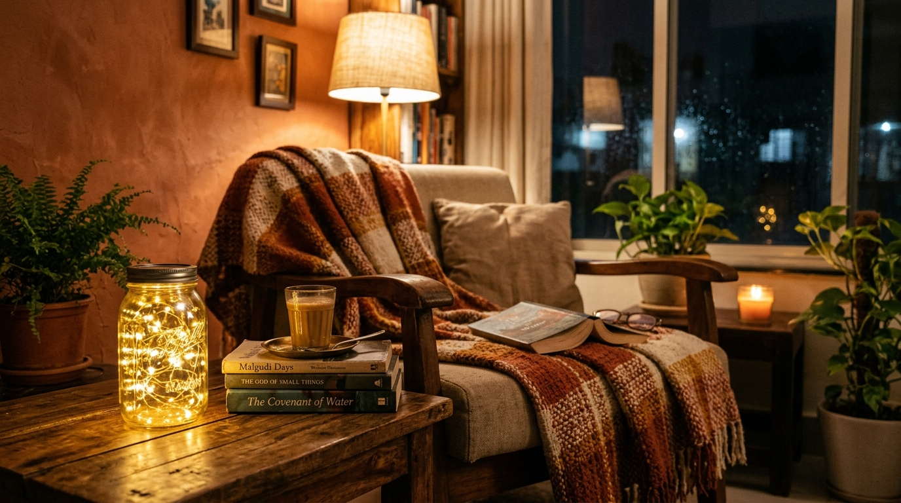
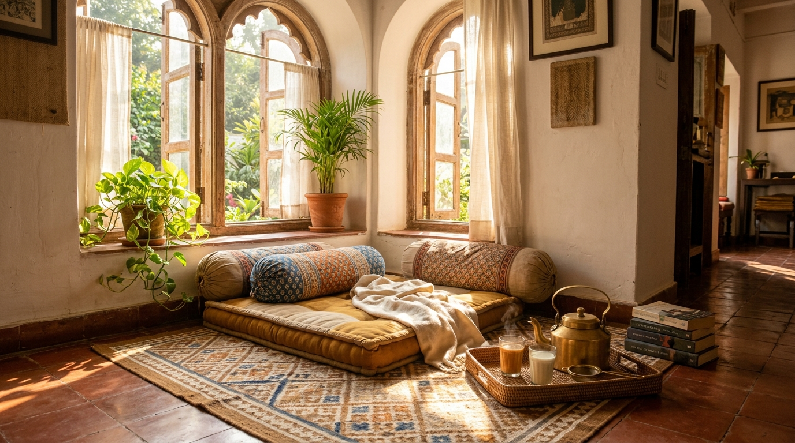

"Across North India, especially Punjab and the plains, mid-November brings a bone-chilling dampness. Thick morning fog rolls across streets, and unheated homes with polished marble floors turn icy cold beneath bare feet."
While design catalogs suggest expensive heaters, Indian homes are built for 45°C summers; high ceilings and stone floors keep us breezy in May, but turn chilly by December.
In Punjabi households, the answer was never plastic heaters. Grandmothers brought out handloom cotton durries, winter khes, and wool shawls. As in our Balcony Chai Corner Guide and Budget Room Decor Ideas, true warmth comes from mindful layering.
With practical winter home decor under ₹2000, you can transform cold living spaces into an inviting sanctuary. Here are tested Indian home styling ideas and budget winter decoration ideas that blend affordable bazaar finds with items you already own at home.
Inside This Winter Styling Guide
- Floor Layering: Taming Chilly Marble Floors
- Golden Ambient Lighting: Ditching Harsh Tubelights
- Heirloom Brass, Marigolds & Warm Textiles
- Sensory Comfort: Safe Kitchen Stovetop Simmer Pot
- Chasing Daylight: Sunlit Nooks & Plant Care
- Transparent ₹2,000 Budget Breakdown (Buy vs. Reuse)
- 1-Day Weekend Room Refresh Routine
- Frequently Asked Questions
1. Floor Layering: Taming Chilly Marble Floors
Bare stone is the primary cause of a freezing winter room. Polished marble and vitrified tiles absorb ambient cold, radiating chill upward.
Instead of expensive carpets, turn to flatweave cotton durries:
- Double-Durrie Layer: Spread a large neutral cotton durrie as a base, overlaying a smaller dhurrie in warm earthy tones (mustard, rust, or terracotta) diagonally to define your seating zone.
- Anti-Slip Precaution: Durries slide easily on polished marble. Always place an inexpensive rubber anti-slip mesh underlay or corner rug tape beneath the bottom durrie to prevent bunching and slips.
- Bedside Warmth: Keep a 2x3 ft cotton rug and warm wool socks or padded Punjabi juttis by the bed to avoid bare steps onto ice-cold stone.
- Repurposed Alternative: Fold an old thick cotton bedsheet or handloom khes beneath your durrie for hidden insulation at ₹0 cost.
2. Golden Ambient Lighting: Ditching Harsh Tubelights

Nothing drains warmth from a room faster than an overhead 6500K cool-white LED tubelight. Its clinical glare exaggerates gray winter skies.
Importantly, 2700K warm-white lighting does not physically heat the room. Instead, it creates vital optical and psychological warmth. Golden amber light softens harsh shadows, eases eye strain, and helps the body relax:
- Switch to 2700K Warm White Bulbs: Replace cold ceiling bulbs in table or floor lamps with 9W warm-white or amber filament LED bulbs (approx. ₹120–₹150). The mood shift is immediate.
- Fairy Lights in Recycled Glass Jars: Wash empty Horlicks, pickle, or coffee glass jars from your kitchen (₹0). Coil an inexpensive 10-meter strand of warm-yellow copper wire fairy lights inside (approx. ₹140–₹180) for gentle tabletop amber glow.
- Twilight Terracotta Diyas: Light two clay diyas with mustard oil at dusk. The living yellow flame introduces an ancient comfort no electric fixture can match.
3. Heirloom Brass, Marigolds & Warm Textiles
Winter is the natural season for warm metals. Brass (peetal) and bronze reflect golden light, softening cold neutral walls.
Bring out ancestral brass—an old parat, lota, or uruli. Wash with lemon and salt, keeping their vintage patina, and place them on a coffee table:
- The Fresh Marigold Bowl: Float fresh marigolds (approx. ₹30–₹50 from mandi) and clay diyas in clean water. (Skip sprays or camphor; the natural peppery scent is crisp and clean).
- Draping Winter Shawls & Lohis: Raid your winter wardrobe instead of buying throws. Heavy wool Lohis, Phulkaris, or warm shawls look elegant draped over armchairs or diwans.
- Warm Neutral Cushion Covers: Swap summer pastels for textured earthy fabrics—warm rust, ochre, olive, and unbleached khadi. Tailor remnants make great budget covers.
4. Sensory Comfort: Safe Kitchen Stovetop Simmer Pot
Commercial room sprays smell artificial. For gentle fragrance that feels naturally warming, nothing rivals a traditional kitchen stovetop simmer pot.
Using spices from your kitchen masala dabba, add two cups of fresh water to a small saucepan:
- 2 broken sticks of cinnamon (dalchini)
- 4 whole cloves (laung)
- 2 crushed green cardamom pods (elaichi)
- Peels of one fresh winter kinnow or orange
- A thin slice of bruised fresh ginger
Bring to a boil, then simmer on the lowest flame for 20 minutes. The rising steam fills your home with a subtle scent of spiced citrus tea.
5. Chasing Daylight: Sunlit Nooks & Plant Care

In North India, winter centers on following the sun (*dhoop senkna*). Health note: window glass blocks UVB rays, so you do not synthesize Vitamin D through glass (step onto an open balcony or terrace for 15 minutes of direct sun).
Indoors, winter sunlight provides circadian daylight, psychological uplift, and plant vitality:
- Sheer Cotton Curtains: Replace dark drapes with airy white mulmul or sheer cotton curtains to maximize daytime solar light.
- Movable Chai Seat: Keep a light cane chair or floor gaddi portable to follow the sun—from balcony at 9:30 AM with tea to the living room window by 2:30 PM.
- Indoor Plant Daylight: Move money plants and snake plants closer to sunny sills for bright indirect daylight without drafts.
6. Transparent ₹2,000 Budget Breakdown (Buy vs. Reuse)
A mindful winter makeover balances budget purchases with items you already own at home:
| Category | Item & Purpose | Source / Sourcing Tip | Estimated Cost* |
|---|---|---|---|
| Part A: Items to Reuse From Home (₹0 Cost) | |||
| Metal & Glass | Ancestral brass uruli & glass jars | Kitchen shelves | ₹0 (Reuse) |
| Textiles & Spices | Winter shawls, Lohis & spices | Wardrobe & kitchen | ₹0 (Existing) |
| Part B: Budget Items to Purchase | |||
| Floor Insulation | Cotton durrie (4x6 ft) | Weavers' market / Khadi | ₹600 – ₹750 |
| Floor Safety | Rubber anti-slip underlay mesh | Local hardware store | ₹140 – ₹190 |
| Lighting | Two 9W 2700K warm LED bulbs | Electrical shop | ₹240 – ₹280 |
| Fairy Glow | Copper fairy lights (warm, 10m) | Bazaar stall | ₹140 – ₹180 |
| Floral & Clay | Fresh marigolds & clay diyas | Mandi & potter | ₹60 – ₹90 |
| Cushions | 2 Warm neutral cushion covers | Tailor remnants / khadi | ₹350 – ₹450 |
| Total Estimated Out-of-Pocket Spend | ₹1,530 – ₹1,940 | ||
*Pricing note: All estimated costs are approximate local bazaar indicators (North India). Exact prices vary by city, vendor, and bargaining.
7. 1-Day Weekend Room Refresh Routine
You do not need an entire week to make your home cozy. Dedicate one relaxed weekend morning:
Morning (9:00 AM – 11:30 AM): Airing & Daylight
- Air the room; hang durries and wool shawls in midday sun to evaporate moisture.
- Clean window glass to let maximum daylight flood in.
Afternoon (1:00 PM – 3:30 PM): Layering & Sunlit Nook
- Place anti-slip mesh and durries on cold marble; drape shawls over diwans.
- Set up your movable sunny chair with plants; float marigolds in brass.
Evening (5:00 PM – 7:00 PM): Golden Glow & Chai
- Close windows by 5:00 PM to seal in daytime warmth.
- Simmer cinnamon and orange peel on low heat (following safety rules).
- Switch off tubelights, turn on 2700K amber lamps, and enjoy hot adrak chai.
8. Frequently Asked Questions
Ready to Make Your Home Cozy This Winter?
You do not need a shopping spree. Bring out the brass and cotton durries, and let golden sunshine do the rest.
🇮🇳 इस गाइड को हिंदी में पढ़ें →